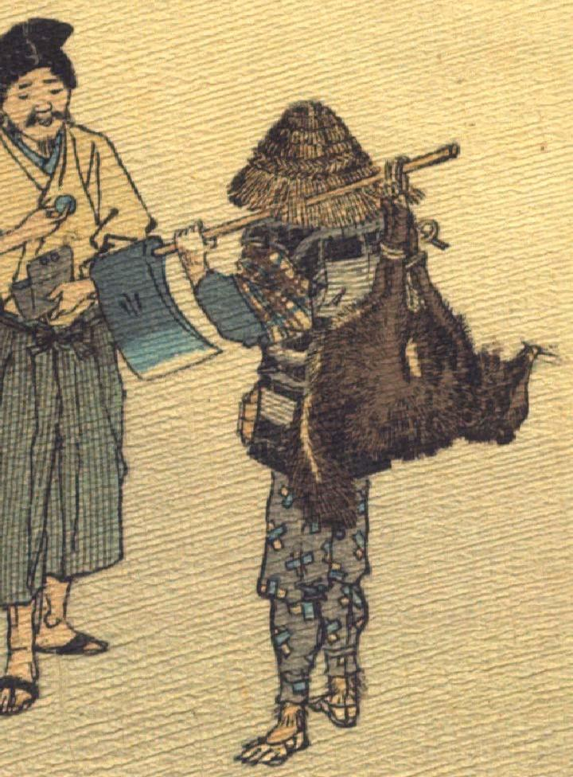

狐。着物と袖なし羽織、袴を着て、草鞋を履き、藁笠をかぶり、きこりのような扮装をしている。左肩に斧を背負い、その柄に前脚後脚を揃えて縄で縛られた狸を吊るしている。人間の男に狸を売ろうとしている。
著作者：J.Dautremer／出典：親書誌：U426_nichibunken_0120：La victoire du petit renard／日付：2006／資源識別子：U426_nichibunken_0120_0005_0001
Copyright (c)2010- International Research Center for Japanese Studies, Kyoto, Japan. All rights reserved.